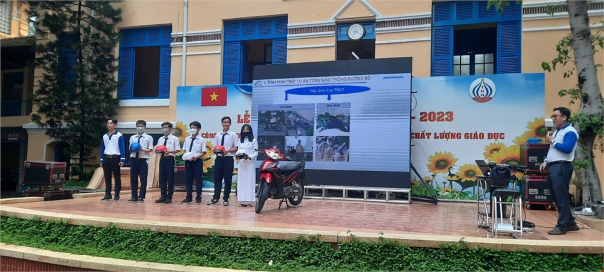
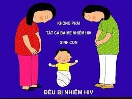
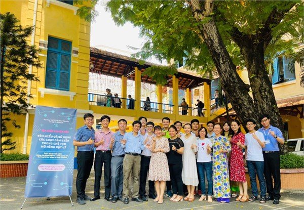

Ngoại khóa an toàn vui đến trường
6/9/2022 | Giáo dục công dân
Căn cứ kế hoạch số 3083/KH -SGDDT ngày 30 tháng 8 năm 2022 của Sở giáo dục và đào tạo về việc Hưởng hứng tháng An toàn giao thông cho học sinh đến trường, sáng ngày 26/9/2022 tổ Giáo dục công dân được sự chỉ đạo của lãnh đạo nhà trường kết hợp công ty Honda Việt Nam – đại diện Head Tường Nguyên đã tổ chức chương trình ngoại khóa với chủ đề: An toàn vui đến trường!

Lợi ích của dự phòng lây truyền hiv tư mẹ sang con
30/11/2021 | Sinh học
Ở nước ta ước tính trung bình mỗi năm có từ 1,5-2 triệu phụ nữ mang thai. Với tỷ lệ nhiễm HIV khoảng 0,25-0,3% trong nhóm này thì mỗi năm có khoảng từ 4.000-6.000 bà mẹ mang thai nhiễm...
Luật phòng, chống nhiễm vi rút gây ra hội chứng suy giảm miễn dịch mắc phải ở người (hiv/aids) của quốc hội nước cộng hoà xã hội chủ nghĩa việt nam - số 64/2006/qh11 ngày 29 tháng 6 năm 2006
30/11/2021 | Sinh học
Căn cứ vào Hiến pháp nước Cộng hoà xã hội chủ nghĩa Việt Nam năm 1992 đã được sửa đổi, bổ sung theo Nghị quyết số 51/2001/QH10 ngày 25 tháng 12 năm 2001 của Quốc hội khoá X

Tập huấn chuyên môn - tìm hiểu và sử dụng các loại cảm biến trong chế tạo mô hình vật lí
30/11/2021 | Vật lý
Nếu bạn là một sinh viên khoa điện tử, một kỹ sư cơ khí thì cảm biến đã không còn quá xa lạ. Đằng này, cả những người làm nông cũng đã tự may mò, chế tạo ra máy móc sử dụng cảm biến trong...